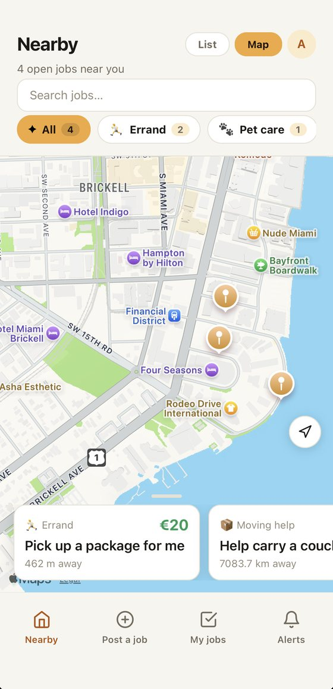
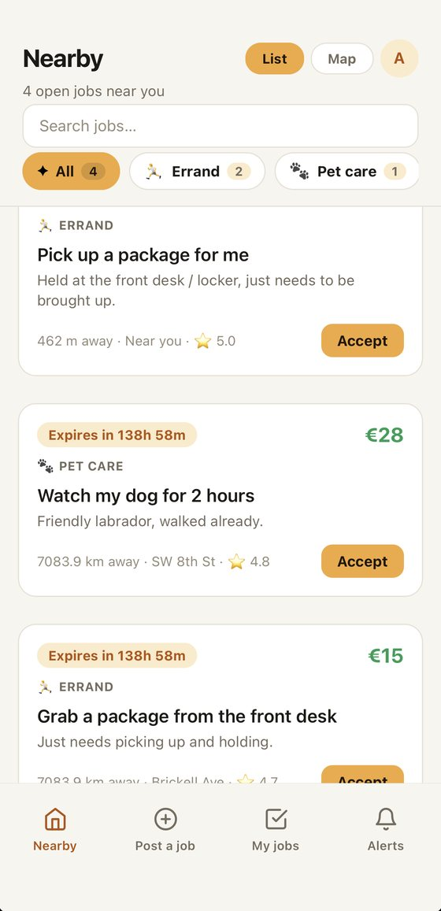
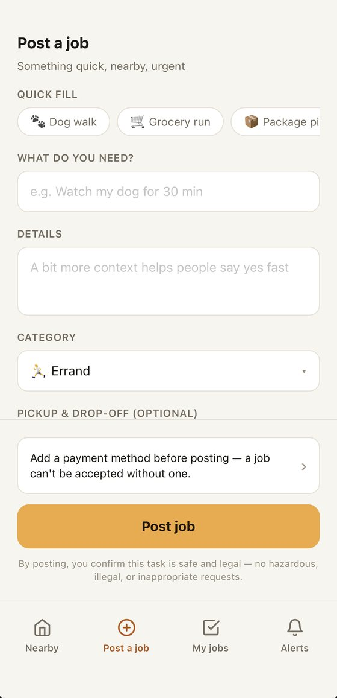
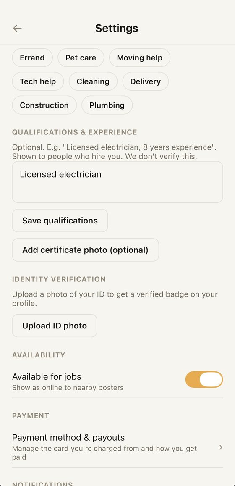

Find jobs on the map
Workers see open jobs around them as pins on a map. Filters narrow the view by category, such as errands, pet care, moving help, cleaning or plumbing. Tap a card to see the price, the distance and the details.
Last-Minute Jobs
Last-Minute Jobs is a mobile app that connects people who need a task done at short notice with people nearby who are free to do it. It is a marketplace: we introduce the two sides and handle the payment, and the worker does the job.

Workers see open jobs around them as pins on a map. Filters narrow the view by category, such as errands, pet care, moving help, cleaning or plumbing. Tap a card to see the price, the distance and the details.

Each job shows the price, how far away it is, how long until it expires, and the poster's rating. One tap on Accept and the job is yours.

Pick a quick template or describe what you need, choose a category and set the price and the place. A payment method is required before posting, so a worker knows the job is real.

Workers choose their skills, describe their qualifications and experience, and can verify their identity with an ID photo. Qualifications are shown to the people who hire them and are marked as provided by the worker.
Payments are processed by Stripe. When a worker accepts a job, the agreed amount is held on the poster's card. It is not paid out until the job is done. If the worker does not arrive within a reasonable time, the poster can cancel and the held amount is refunded.
Our fee: a platform fee of 15% of the job price, with a minimum amount, is deducted from the worker's payout. The fee is shown in the app before a job is posted or accepted. There is no charge for browsing or posting.
If something goes wrong, either side can open a dispute in the app. We review the messages, photos and timestamps from both people and may refund, release or split the payment as we judge fair. Cancellation rules, including late cancellations and no-shows, are shown in the app before you confirm. Full details are in our Terms of Service.
Questions, refunds or account help: elevengroupspain@gmail.com